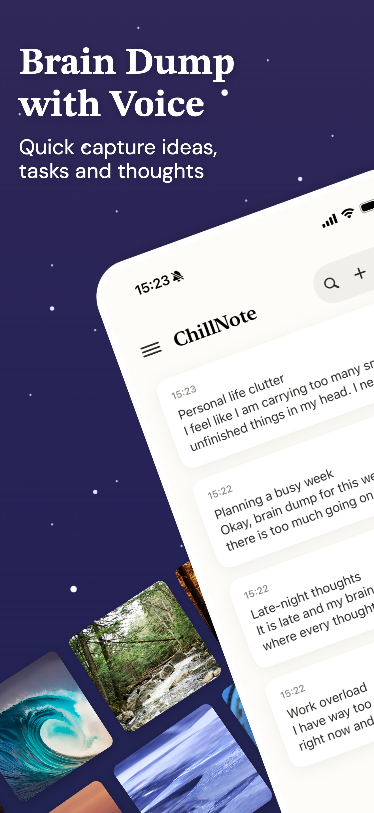
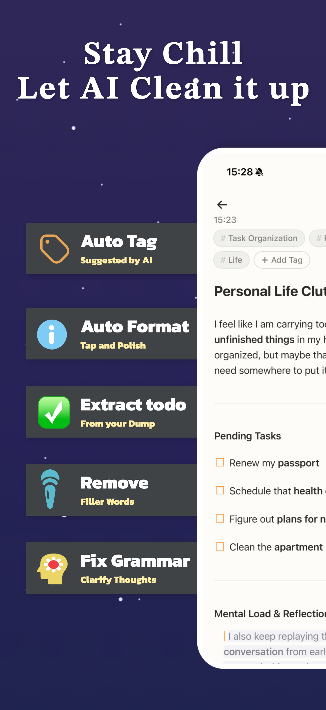
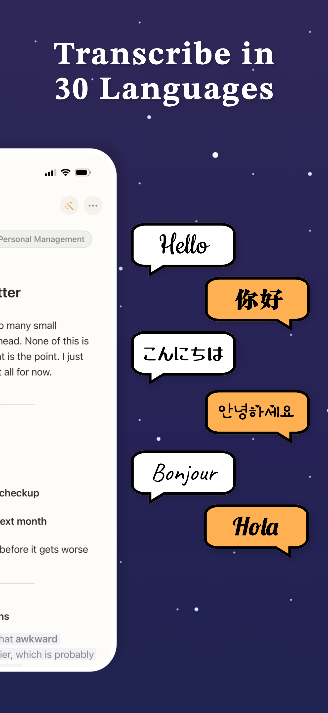

Brain Dump Your Ideas Here
BrainDump first. Let ChillNote clean it up.

AI Native
From Brain Dump to Clear Notes


Frequently asked questions
Questions?
Are notes in ChillNote exportable?
Yes. ChillNote uses Markdown, so you can easily export your notes to Obsidian or other knowledge bases. Markdown is also highly compatible with AI workflows, which makes your notes easier to reuse later.
How to Brain Dump in ChillNote?
You can use ChillNote to brain dump by voice. Just say whatever comes to mind without worrying about structure.
ChillNote turns your speech into text, polishes it with AI, understands the meaning, pulls out action items, and organizes everything into a clearer structure.
Right now, each voice session is limited to 10 minutes, so you can spend 10 minutes a day speaking everything in your head into your phone. Then, whenever you need it, you can come back to the organized notes.
Can you give me some brain dump templates?
Yes. You can start with simple prompts like:
What is on my mind right now? What do I need to do today? What am I avoiding? What ideas do I not want to lose? What should I revisit later?
The goal is not to sound polished. The goal is to get everything out first, then let ChillNote clean it up.
Ready to try ChillNote?
Download the iOS app or get in touch.